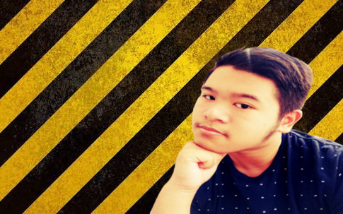

Hi! My name is Daniel Harun and right now i'm studying in SMAKBO. I was born in Jakarta, 5 November 2001. When i was born, i was the quietest of all the babies in the hospital where i was born. Because of that, my parents worry about me. They thought that i was dead. But actually i was sleeping. When i grew up, i have 1 younger brother and 1 younger sister. They were very annoying at first. But, as the time goes on, they become more little silent than before.
I have father and mother that take care of me until i grew up. Actually, my mother is the second child and she has 1 older brother, 1 younger sister and 1 younger brother. Beside that, my father is the first child and he has 1 younger brother. My address is Teluk Intan Apartment 5J floor, Teluk Gong, North jakarta. So yeah, i live in apartment. Not a luxury apartment, but just an ordinary apartment. Ah yeah, my religion is christian anyway. If you want to contact me, here's my contact number : 081234888666 and here's my email address : daniel.harun2001@gmail.com. My motto is "when there's a will, there is a way".
Now, i want to tell you about my hobbies. My hobbies are playing rubic, reading novel books, and drawing. My first hobby is playing rubic. I start to playing rubic when i was 10 graders. That time, my friend called Adam, introduced me about rubic. After that, i started to play rubic. At first, it was hard to play it. But, as the time goes on, i started to play rubic quickly and i did it. My second hobby is reading novel books. When i was still a kid, i loved to read books. Then my mom, bought me a novel. At first, i was really upset. Because, inside the novel, there was no picture. But my mom said "just imagine it.". Then, i started to imagine it and it was very exciting. My third hobby is drawing. I started to draw a picture, when i was in elementary school.That time, i only can draw 2 mountains and a ricefield and two birds on the sky. But as the time goes on, i can draw many various pictures.